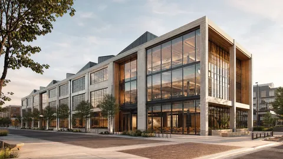
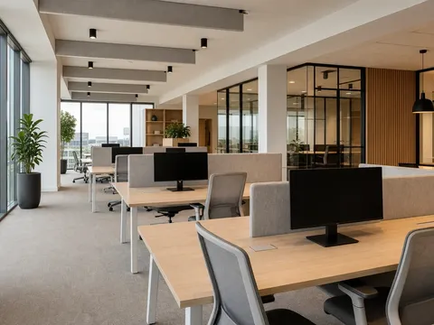
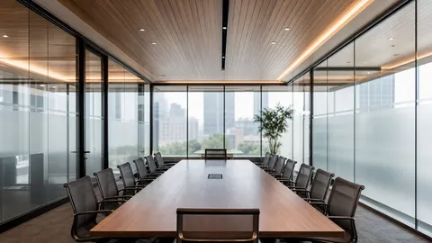
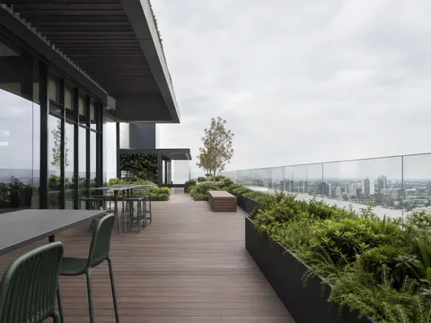
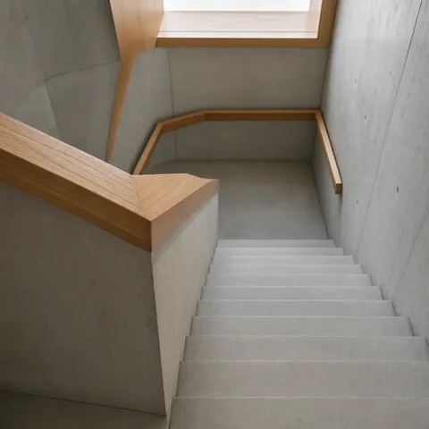

AI Startup HQ
Location: Te Awa Innovation Precinct, Auckland · Year: 2025
Overview
A compact headquarters for a fictional AI product company: a four-storey adaptive reuse of a warehouse shell wrapped with a light curtain-wall and a timber-lined collaboration floor. The brief prioritises daylight into deep floor plates, informal meeting edges, and a rooftop terrace that doubles as an all-hands space.
This is a placeholder project for testing. Page imagery is intentionally low resolution; full-resolution counterparts are kept in a dedicated Dropbox-upload folder and are not linked from this page. None of the imagery or awards are real.





Awards
- Workplace Design Award (Fake), 2025
- Adaptive Reuse Commendation (Fake), 2025